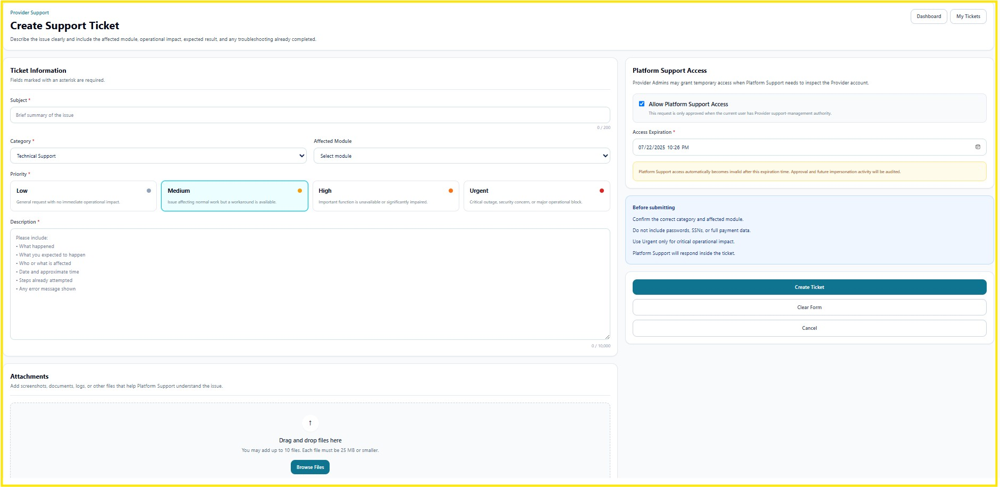

GETTING STARTED
Getting Support
The Getting Support page explains how authorized users can create a support ticket, describe an issue, select the affected module and priority, attach supporting files, and optionally grant temporary Platform Support access.
Support Ticket Overview
Use the Create Support Ticket page when you need assistance with a technical issue, system function, access problem, or operational concern. Provide complete and accurate information so Platform Support can investigate efficiently.

Figure 1. Create Support Ticket Page
Main Sections
| Section | Description |
|---|---|
| Ticket Information | Enter the subject, category, affected module, priority, and detailed issue description. |
| Priority | Select Low, Medium, High, or Urgent based on the operational impact. |
| Description | Explain what happened, what was expected, who or what is affected, when the issue occurred, steps already attempted, and any error message shown. |
| Attachments | Upload screenshots, documents, logs, or other files that help Platform Support understand the issue. |
| Platform Support Access | Optionally grant temporary access when Platform Support needs to inspect the Provider account. |
| Access Expiration | Define when temporary Platform Support access automatically expires. |
| Ticket Actions | Create the ticket, clear the form, cancel, return to Dashboard, or review My Tickets. |
Step 1 — Enter Ticket Information
- Enter a brief and clear Subject.
- Select the appropriate Category.
- Select the Affected Module.
- Select the correct Priority.
- Enter a complete issue description.
Recommended Description Details
- What happened.
- What you expected to happen.
- Who or what is affected.
- Date and approximate time.
- Steps already attempted.
- Any error message displayed.
Step 2 — Select Priority
| Priority | When to Use |
|---|---|
| Low | General request with no immediate operational impact. |
| Medium | Issue affecting normal work, but a workaround is available. |
| High | An important function is unavailable or significantly impaired. |
| Urgent | Critical outage, security concern, or major operational block. |
Step 3 — Add Attachments
Attach screenshots, documents, logs, or other files that help explain the issue. Files may be added by drag and drop or by selecting Browse Files.
- Upload only files relevant to the issue.
- Review screenshots before uploading.
- Do not include passwords.
- Do not include Social Security Numbers.
- Do not include payment card information.
- Avoid unnecessary Protected Health Information (PHI).
Step 4 — Platform Support Access
A Provider Administrator may allow temporary Platform Support access when support personnel need to inspect the Provider account directly.
- Select Allow Platform Support Access.
- Choose the required access expiration date and time.
- Review the request before submitting.
- Create the support ticket.
Temporary Platform Support access automatically becomes invalid after the expiration time. Approval and impersonation activity may be recorded in Audit Logs.
Step 5 — Submit the Ticket
- Confirm the category and affected module.
- Review the selected priority.
- Verify the description and attachments.
- Review temporary support access settings, if enabled.
- Click Create Ticket.
- Use My Tickets to review updates and responses.
Security
- Only authorized users may create and manage support tickets.
- Temporary support access must have an expiration time.
- Support access and impersonation activity may be audited.
- Access should be granted only when necessary.
HIPAA Considerations
- Do not include unnecessary PHI in the ticket description.
- Do not upload documents containing sensitive information unless required.
- Never include passwords, Social Security Numbers, or payment information.
- Use temporary Platform Support access only for authorized troubleshooting.
Troubleshooting
- If the ticket cannot be submitted, verify all required fields.
- Confirm the affected module and priority are selected.
- Check file size and supported attachment limits.
- Refresh the page and try again.
- Contact the Provider Administrator if support access cannot be enabled.
Frequently Asked Questions
When should I select Urgent?
Use Urgent only for a critical outage, security concern, or major operational block.
Can I attach screenshots?
Yes. Screenshots are recommended when they help explain the issue.
Is Platform Support access permanent?
No. Temporary access expires automatically at the selected date and time.
Where can I review submitted tickets?
Use the My Tickets button on the support page.